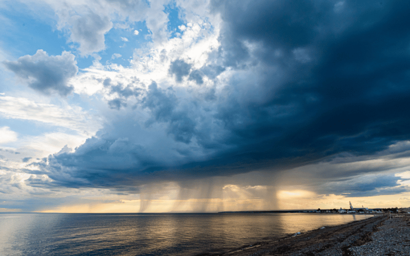
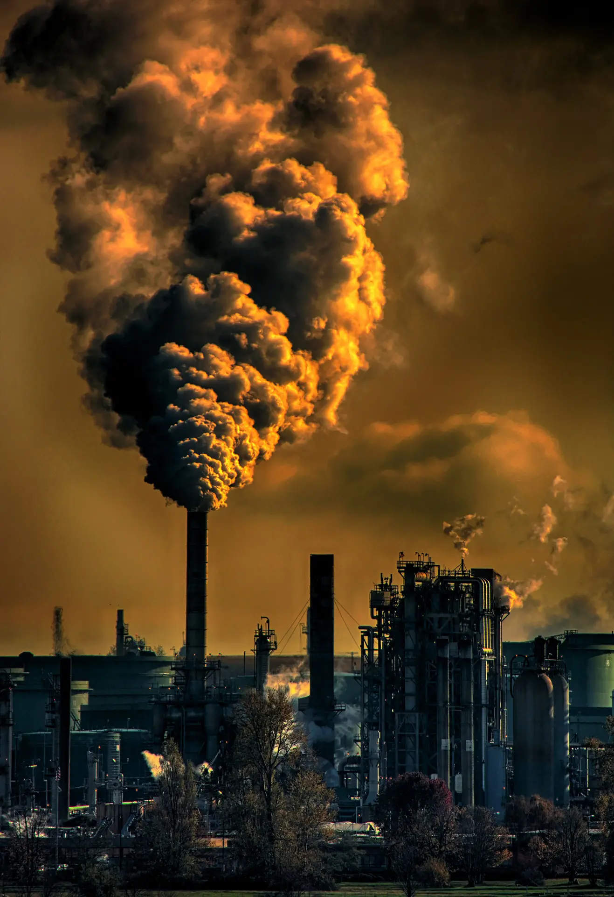
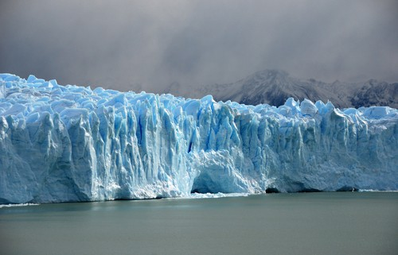
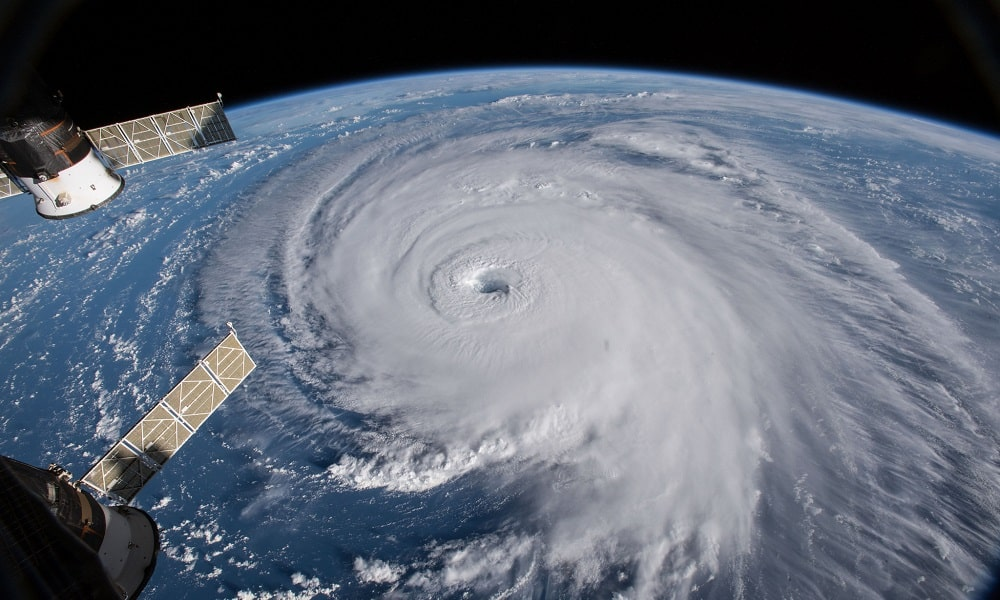
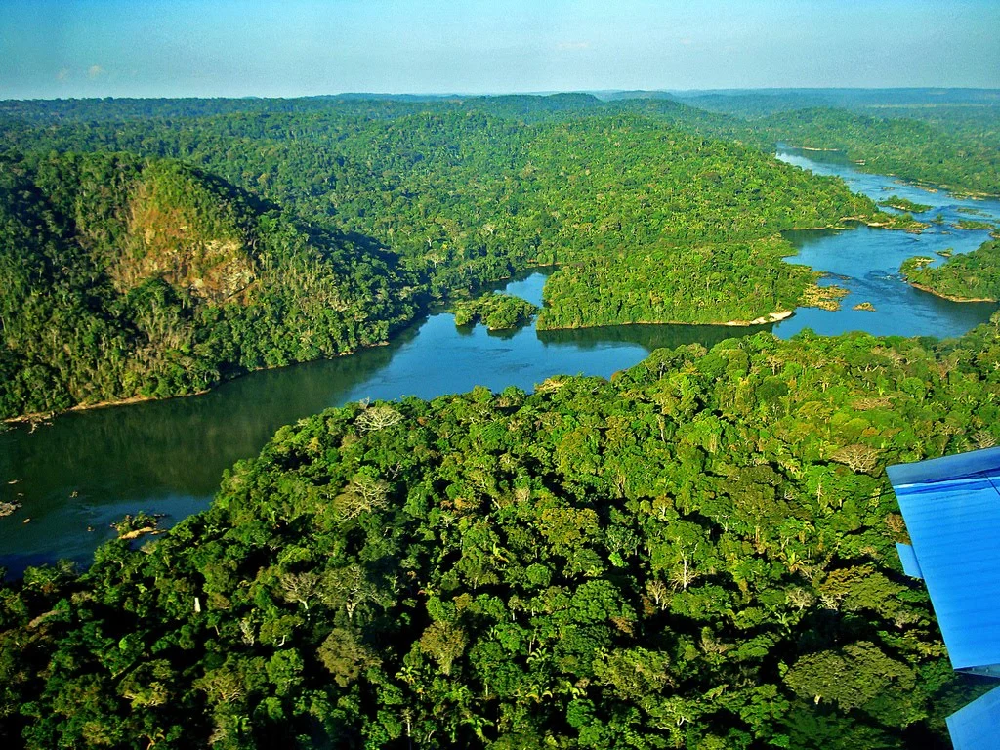
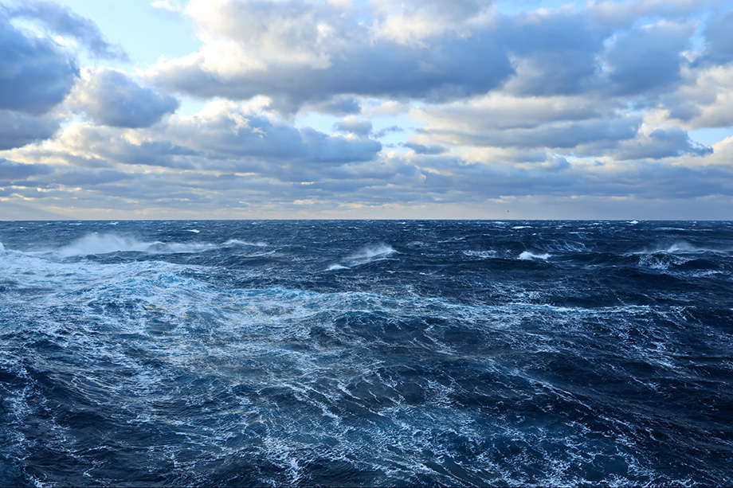

A Terra está em constante transformação. Utilizando satélites e tecnologias avançadas, a NASA monitora diariamente o clima, os oceanos, as florestas, as geleiras e diversos fenômenos naturais. Esses estudos ajudam cientistas do mundo inteiro a compreender melhor o funcionamento do planeta e os impactos das mudanças climáticas.

As mudanças climáticas representam um dos maiores desafios da atualidade. A NASA utiliza satélites para medir a temperatura da Terra, acompanhar alterações na atmosfera e entender como essas mudanças afetam o planeta.
O aumento da temperatura média da Terra influencia diretamente o clima, aumentando a frequência de secas, ondas de calor, tempestades intensas e incêndios florestais em diferentes regiões do planeta.


Satélites acompanham constantemente as calotas polares. O derretimento do gelo contribui para o aumento do nível dos oceanos e altera diversos ecossistemas ao redor do mundo.
Furacões, tempestades, enchentes e incêndios são monitorados em tempo real. Essas informações ajudam autoridades a emitir alertas e proteger milhares de pessoas.


Imagens de satélite permitem acompanhar o avanço do desmatamento em diversas regiões do planeta, auxiliando pesquisadores na preservação dos recursos naturais.
A NASA monitora constantemente a temperatura dos oceanos, suas correntes e o aumento do nível do mar, fatores essenciais para compreender o clima terrestre.

Mais de vinte satélites da NASA observam continuamente a Terra.
A temperatura média global aumentou ao longo das últimas décadas.
Cerca de 71% da superfície terrestre é coberta por água.
As florestas desempenham um papel fundamental no equilíbrio do clima mundial.